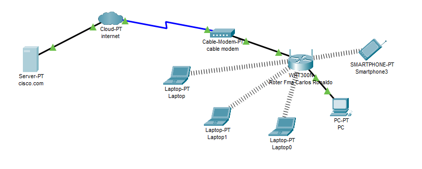
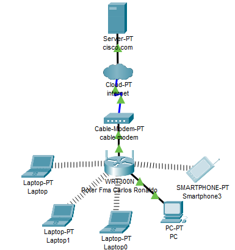

Problematica inicial
¿Cómo permitir que Carlos Ronaldo y sus familiares puedan navegar por la página Web cisco.com, desde su casa, desde sus computadores personales y teléfonos celulares, utilizando una red y comunicación de datos?
Elementos de red usados en la simulación
| Elemento | Descripción |
|---|---|
| Dispositivos Inteligentes | Aparatos electrónicos que pueden conectarse, compartir información e interactuar con los usuarios y con otros dispositivos inteligentes, mediante una red LAN. En este laboratorio se simulo una PC, dos laptops y un smartphone |
| Router | Es un hardware el cual a diferencia del módem permite la conexión de uno o más dispositivos a una red local la cual está a su vez obtiene acceso al internet y estos pueden gestionar el tráfico de la información transmitida entre los dispositivos que se encuentren conectados a la red local los cuales estarán asignados con una dirección ip la cual es diferente en cada dispositivo conectado, hablando de la información transmitida por este dispositivo, este proceso del paso de la información se realiza por paquetes de datos los cuales cuentan con sus secciones/capas de las cuales se pueden identificar: el emisor, tipo de información, y hacia dónde se dirige esta información. Estos son los más utilizados en las empresas hoy en día debido a que permiten una conexión práctica con varios dispositivos de empleados a la vez que se puede gestionar su propia seguridad con el uso de software protegiendo de posible malware y sitios web no deseados para una red local de hogar o compañía. |
| Modem | Es un dispositivo con la capacidad de permitir la comunicación entre 1 dispositivo a la red de internet que convierte señales analogicas en digitales con el fin de permitir a dispositivos el acceso a la net, a la vez que el modem respecto a sus servicios funciona recibiendo la información del proveedor de servicios de internet a través del elemento cable coaxial, luego se hace el proceso de la conversión de señales correspondiente y realizar el proceso de intercambio de información correspondiente. |
| Servidor | Consiste en un ordenador o cpu física el cual siempre ha de mantenerse encendido para proporcionar su servicio el cual tiene como función, el transmitir la información a otros dispositivos que estén conectados al mismo servidor y entre los datos que se pueden transmitir mediante estos servidores se encuentran: bases de datos, archivos de texto, fotos/imágenes, archivos de video, audios, etc. |
| Nube | Esta hace referencia a servidores los cuales se acceden por medio de un dispositivo con capacidad de conexión a internet y con esto el usuario obtendrá acceso a bases de datos que están ligadas a estos mismos servidores. Los servidores pertenecientes a la nube se encuentran guardados en otras bases de datos de todo el planeta, gracias a esta función hogares, negocios, etc. pueden manejar sus servidores de red sin necesidad de algún hardware o software adicional en sus dispositivos. |
Tipos de redes y conexiónes
LAN
Local Area Network. Las Redes de Área Local son las más utilizadas en el intercambio de datos y recursos entre ordenadores. Habitualmente se utilizan para conectar equipos en espacios relativamente pequeños. Permite la conexción entre el PC, el router y el modem; y tambien entre el servidor y la nube.
WLAN
Wireless Local Network. A diferencia de la Red LAN, ésta red es inalámbrica y realiza el intercambio de información a través de ondas de radio. Permite la conexión entre las dos Laptos y el smartphone con el router.
Cable coaxial
Tipo de conexión de banda ancha que utiliza líneas de cable coaxial de cobre para transmitir datos a través de señales de radiofrecuencia. Permite la conexion entre la nube y el modem.
Simulación de la solución
Para hacer la conexión de esta pequeña red de comunicaciones en casa, se definieron primero los dispositivos que se van a usar, los dispositivos fueron, un servidor, una nube a la que llamaremos “internet”, un cable módem y un router, de esta manera hacer una pequeña red y comunicación de datos para que los dispositivos que estén conectados ya sea de manera inalámbrica o por medio de cable puedan acceder a una página llamada Cisco.com. A continuación, la arquitectura de la solución.
1.Conectar los dispositivos
Primero se debe conectar todos dispositivos, comenzando con el servidor, el servidor va conectado directamente al internet, por medio de un cable de cobre directo, el internet va conectado al cable modem por medio de un cable de coaxial, y el cable modem va conectado al router por medio de cable de cobre directo.
Después se miran que dispositivos van a usar la red y los seleccionamos, para nuestro caso utilizamos una PC, dos laptops y un smartphone.
La PC va conectada al router por medio de cable de cobre directo, es decir, por un medio alámbrico, caso contrario en los dispositivos como las laptops y el celular ya que estos están conectados por un medio inalámbrico que es el wifi, en el caso de las laptops hay que cambiar un componente, para esto hay que apagar la laptop, quitarle el componente que no vamos a usar y ponerle un adaptador de wifi, para que reciba las señales wifi y se conecte al router.
2.Configurar los dispositivos.
Este probablemente es el paso más complicado ya que toco buscar bastante información acerca de esto, primero comenzamos configurando el servidor el cual va a estar alojada la pagina a la que se quiere ingresar (cisco.com), para esto debemos entrar al servidor, entrar al desktop y abrir la pestaña de IP configuration, aquí vemos algunas cosas como el “IPv4 address”, “subnet Mask”, “Gateway” y “DNS server”, para configurarlo nos aseguramos de que este seleccionada la opción de ”Static”.
A continuación, le asignamos una dirección de IP al servidor, en mi caso yo le puse “192.56.100.100”, la subred se configura automáticamente, dándonos un numero de “255.255.255.0”, también le añadimos un numero a la puerta de 192.56.100.1 y al servidor DNS que le dejamos el mismo número que la dirección de IP.
En el mismo servidor vamos a añadir la página web, la aplicación de cisco ya nos da una pagina en HTML de ejemplo, nosotros utilizamos la misma página, pero lo que vamos a hacer es que se pueda utilizar esa página en los diferentes dispositivos, para esto tenemos que guardar la página en el DNS, lo primero que tenemos que hacer es entrar al servidor y abrir la pestaña que dice “Services” de la parte superior, cuando estemos adentro buscamos una parte que dice DNS, aquí entramos y lo primero que hacemos es encender el servicio de DNS.
Para agregar la página primero le damos el nombre que es cisco.com, y le agregamos una dirección, en este caso como anteriormente configuramos la IP y servidor DNS con el mismo número, entonces lo ponemos exactamente igual (192.56.100.100) ya que la dirección de la página va a estar en ese mismo servidor, para finalizar con la configuración del servidor, le damos agregar al DNS y nuestra pagina quedara guardada en ese servidor.
El siguiente por configurar es el Internet, en este caso solo le vamos a especificar, que para su conexión estamos usando cable, esto se hace entrando al internet y en la pestaña de “config” buscar una opción que dice Ethernet6, entramos y le damos la opción de cable, después en la misma configuración buscamos una opción que dice “cable” entramos y seleccionamos los puertos de salida y, de entrada, en este caso añadimos el “From port” de coaxial7 y el “To port” el Ethernet6.
Por último configuramos el router, para esto entramos al router y entramos a la pestaña que dice “GUI”, aquí podemos ver la dirección de IP que el router va a asignar a cada dispositivo cambiando el último dígito de la IP en valor consecutivo, en mi caso lo tengo configurado has 29, esto quiere decir que este router solo va a tener capacidad para 30 dispositivos, para que nuestros dispositivos puedan acceder al servidor vamos a habilitar la opción de DHCP server, en donde dice “Static DNS 1” vamos a poner la dirección del servidor (192.56.100.100), la misma dirección IP, para finalizar vamos a la parte de abajo y guardamos los cambios.
De esta manera ya está configurada la red para que los dispositivos puedan entrar a la página que está alojada en el servidor.
3. Mirar que todo haya quedado bien
Para comprobar que podemos ingresar a la página, podemos seleccionar cualquier dispositivo y entrar a la pestaña de desktop, aquí entramos al web browser y accedemos a cisco.com, si está bien nos debe aparecer una página de ejemplo que nos da la misma aplicación de cisco packet tracer.
Así es como Carlos Ronaldo y su familia pueden acceder a la página de cisco.com desde cualquier dispositivo que esté conectado a esa red.
Topología
En la arquitectura propuesta para la solución de la problematica inicial, se distingue una topologia tipo árbol o jerárquica. Este tipo de topología se caracteriza por organizar nodos de manera que formen una estructura jerarquica. Dicha organizacion tambien se caracteriza por determinar cierto orden entre los dispositivos basados en su importancia partiendo desde los elementos superiores a los inferiores. Como se ilustra en la siguiente imagen.
Partimos de un servidor y la nube, elementos que ofrecen tanto tanto la pagina de cisco.com como demas bases de datos. El modem se conecta a la nube. El router al modem para poder crear la red de area local, tanto inalambrica como alambrica. Y finalmente los dispositivos se conectan al router para poder acceder a internet y a la pagina de cisco.com.
Que protocolos se vieron en la simulación
Durante la simulación, se evidenciaron los siguientes protocolos
STP(Spanning Tree Protocol): Protocolo del árbol esparcido. Permite a las redes LAN hacer enlaces redundantes, los cuales permiten mantener funcionando la red cuando un enlace falla o incluso si un switch completo falla.
DTP(Dynamic Trunking Protocol): Protocolo propietario creado por cisco systems. Establece los puertos ethernet en cinco modos diferentes de trabajo: AUTO, ON, OFF, DESIRABLE y NON-NEGOTIATE.
DHCP(Dynamic Host Configuration Protocol): Se encarga se asignar dinamicamente direcciones IP a los dispositivos. Cada dispositivo debe tener una IP única para así evitar caos en la red local y evitar que equipos reciban informacion mal dirigida.
LCMP(Internet Control Message Protocol): Protocolo que utilizan los dispositivos de red para diagnosticar problemas de comunicación en la red.
ARP(Address Resolution Protocol): Este protocolo se encraga de vincular direcciones fisicas(MAC) con direcciones logicas(IP).
NDP(Neighbor Discovery Protocol): Protocolo de IPv6 equivalente al protocolo ARP en IPv4. Permite que un nodo que se acaba de conectar a una red pueda ver otros nodos conectados a la red y sus respectivas direcciones IP.
HTTP(HyperText Transfer Protocol): Permite realizar una petición de datos y recursos desde un dispositivo conectado a la red, como pueden ser documentos HTML. En este caso, es el que permite visualizar la página cisco.com desde los dispositivos de la simulación.
| Protocolo | En que dispositivos se dio |
|---|---|
| STP | PC, Router |
| DTP | Laptop, Laptop0, Laptop1, Router, PC |
| DHCP | PC, Smartphone, Router, Laptop, Laptop0, Laptop1 |
| ICMP | Router |
| ARP | PC, Laptop, Laptop0, Laptop1, Router |
| NDP | Smartphone |
Desafíos Encontrados
El desafío más grande que encontramos en el proceso de elaboración de la red fue encontrar y ver cómo funcionan los componentes que usamos ya que en la aplicación nos dan algunos dispositivos como lo es el servidor o router, el problema es encontrar cómo funcionan y cómo configurarlos para que sean funcionales en el laboratorio que queremos realizar.
Conclusiones
A partir de lo realizado en la simulación en el software de packet tracer y de los conceptos de redes aplicados en el problema podemos concluir que el proceso de configuración de una red requiere del análisis profundo de los conceptos en este ámbito sobre todo en la parte de los ajustes del servidor debido al tipo de configuración de ip que se manejo en el desarrollo de la simulación ya que también se hizo uso de una página web de ejemplo para el funcionamiento del servidor en los dispositivos y ala vez de ajustarles con una dirección ip propia dentro de la red local de Carlos Ronaldo.
Ahora haciendo referencia al ajuste de la pagina tambien se realizo una configuración de dirección ip la cual nos permitiera enlazar con el servidor principal y ese proceso hubo bastante aplicación de los conceptos de los datos en la nube los cuales se resumiría en la base de datos del sitio web con la información transmitida y recibida desde los dispositivos y la red internet de Carlos.